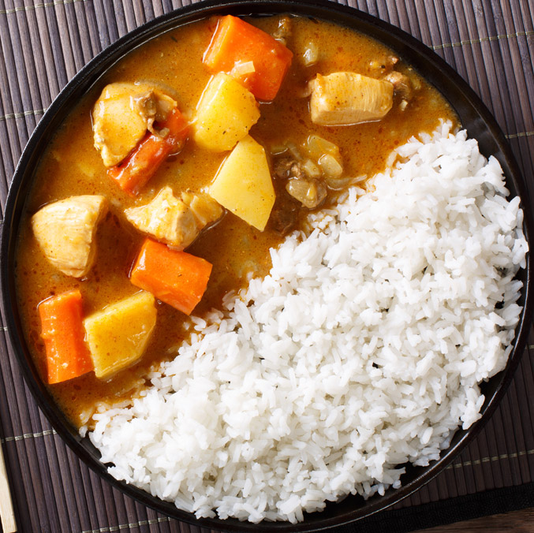

Japanese Curry Rice

Description
Japanese Curry Rice is a Japanese
comfort food my grandma used to make me. It is also super quick and easy!
Ingredients
- Japanese Curry Roux
- Carrots
- Onions
- Potatoes
- Chickpeas
Steps
- Chop your onions, carrots, and potatoes
- Sautee the onions with oil of choice on medium heat
- Add potatoes and carrots once onions begin to become transluscent
- Sautee for another few minutes or so
- Add water to the pot and bring to a boil
- Add your chickpeas
- Simmer until potatoes and carrots are soft
- Add curry roux and stir well
- Simmer for another five minutes and stir well
- Take off heat and serve with rice